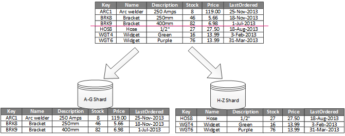
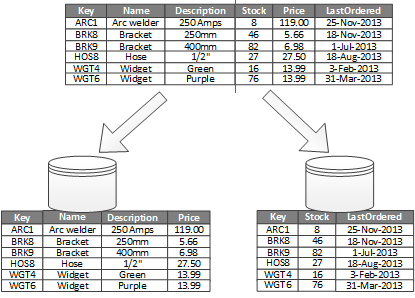

Particionamiento de tablas
A veces, para optimizar el rendimiento en los accesos a datos, se realizan lo que se denomina particiones en las tablas.
Particionamiento Horizontal
El particionamiento horizontal puede utilizarse cuando una tabla crece mucho y llega a almacenar demasiados registros, haciéndose habitualmente las consultas en bloques de registros definidos.
Por ejemplo, "El Corte Irlandés" almacena en la tabla "Ventas" los registros de todas sus ventas desde hace 20 años. Podríamos hacer un particionamiento horizontal:
- por años, si la mayoría de consultas se hacen en el último año, o por históricos anuales.
- por departamentos, si las consultas suelen hacerse por categorías de artículos

Particionamiento Vertical
El particionamiento vertical se utiliza cuando una tabla tiene muchos campos y frecuentemente las consultas se hacen a ciertos campos de manera independiente de otros.

1. Alguna de estas particiones, ¿dan lugar a relaciones 1:1?
¿con que cardinalidades, mínima y máxima?
- En el diagrama E-R ¿alguna entidad podría quedar sin clave?
NOTA: Una entidad que precisa de una clave ajena para tener clave, se denomina
entidad débil.
2. ¿Crees que en algunas de las tablas de la base de datos de fútbol:
"clubs", "sedes", "Jugadores"
se ha realizado algún tipo de partición? ¿cuál?